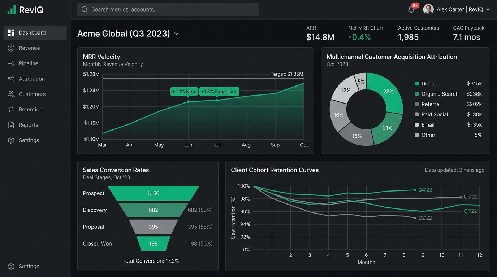
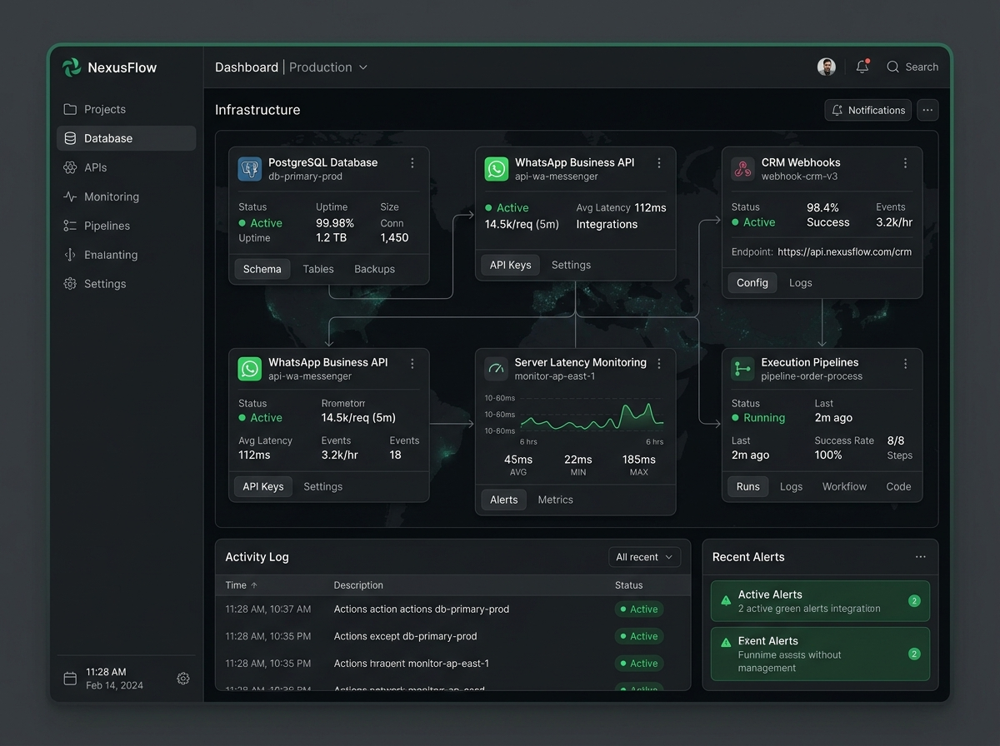
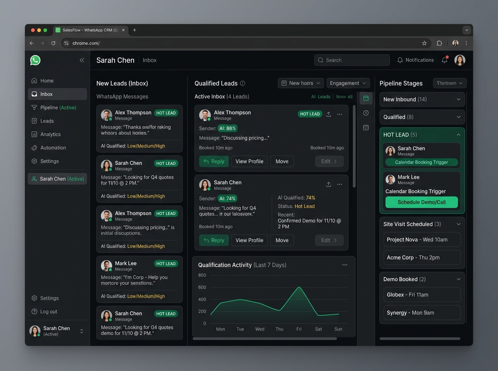
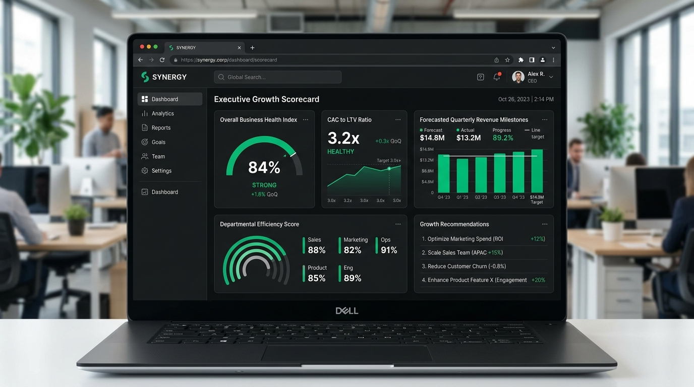

WE SOLVE BUSINESS PROBLEMS.
you grow.
Your business does not need more technology just for the sake of technology. It needs more customers, more enquiries, better operations, and more revenue. That is where Saturn Growth Systems comes in.
Our Approach / What guides the work
Your Problem Comes First.
Our Solution Comes Second.
Most agencies sell what they already know how to build. We work differently. We first understand: What is costing you customers? Where are leads getting lost? What is taking your team too much time? What could be automated? What is preventing your business from growing faster?
Then we design and implement the solution that addresses the real problem. No unnecessary features. No complicated technical language. No one-size-fits-all packages. Just solutions built around your business.
01 ◆ SATURN DIAGNOSTIC PROTOCOL
Proprietary Root-Cause Systems Audit
Costing Customers?
Unclear messaging, delayed responses, friction in checkouts, or lack of social proof that repels buyers.
Lost Leads?
Messages left unread, slow follow-ups, lost inquiries between reps, or no automated retargeting loop.
Team Time Waste?
Manual data entry, repetitive phone calls, compiling reports manually, and endless admin coordination.
Automatable Friction?
Instant customer responses, appointment booking, invoices, client onboarding, and automated reminders.
Growth Bottlenecks?
Inconsistent leads, poor conversion rates, operational chaos when volume increases, or lacking modern software.
WORK THAT speaks for itself

ENTERPRISE REVENUE TELEMETRY & COMMAND CENTER
Real-time pipeline monitoring, automated multi-display sync, conversion anomaly detection, and unified executive metrics.

PROPRIETARY BUSINESS BACKBONE
High-throughput data orchestration server, custom automated pipelines, sub-second trigger engine, and secure offline failover.

AUTONOMOUS LEAD ROUTING & GLASS CONSOLE
Dynamic intake app, instant automated qualification, synced CRM dispatch, and real-time deal alerts directly to phones.

EXECUTIVE GROWTH ARCHITECTURE & DECISION ENGINE
Multi-department operations alignment, data-backed roadmap execution, and synchronized automated reporting for leadership.
DISCIPLINES that move together
Websites & Digital Presence
Websites built for speed, immediate customer trust, and seamless enquiry generation. Includes custom portfolio portals, sales landing pages, and institutional web presences engineered to convert visitors into phone calls and booked appointments.
Marketing & Lead Generation
Paid ad funnels, search visibility, high-intent lead magnets, and automated customer qualification that brings serious buyers to your door rather than casual clickers.
Social Media Management
Consistent, high-quality content production and brand positioning that builds unquestioned authority, establishes client trust, and keeps your company top-of-mind.
AI & Chat Assistants
Smart WhatsApp and website bots that answer enquiries in under 5 seconds, capture customer contact info, qualify requests, and pass warm leads directly to your sales team.
Voice & Calling Systems
Automated phone systems and voice bots that ensure zero missed calls, handle routine customer questions, schedule meetings on your calendar, and send automatic follow-up reminders.
Custom Apps & Software
Software built around how you actually work — custom customer portals, quotation engines, internal tracking dashboards, and management apps that off-the-shelf software can't provide.
Business Automation
Connect your tools together. Invoices that send themselves, contracts auto-generated upon payment, and notification systems that update your team instantly with zero manual intervention.
AI-Powered Business Systems
Integrating modern AI models into daily operations: document scanning, customer categorization, intelligent routing, and predictive business recommendations designed for operational efficiency.
Growth Consultancy
Strategic technology advice from someone who understands commercial business reality. We audit existing systems, identify high-leverage growth levers, and chart the cleanest route forward.
"Your problem doesn't have to fit our products.
Our solution has to fit your problem."
If what you need is not in the list above, that is exactly where we do our best work. We study the problem, map the solution, and build what is required.
BUILT FOR BUSINESSES
that want to grow
We work with businesses of all sizes and across industries. You don't need to be a technology company — you just need an ambition to grow.
Schools & Educational Institutions
More admissions, automated parent inquiry bots, WhatsApp pipelines, and prestigious digital positioning.
Real Estate Businesses
Qualified buyer lead capture, automated site-visit calendar sync, property inquiry dispatchers, and CRM tracking.
Franchise Owners
Standardized lead capture, localized marketing playbooks, and unified multi-location dashboard management.
Founders & Growing Companies
Complete digital ecosystems built fast from zero to scale without bloated engineering agency payroll.
Local & Established Businesses
Modernize legacy client touchpoints, dominate local search, replace chaotic WhatsApp groups with integrated CRM automations, and eliminate administrative drag.
And when your industry is different, that is not a problem. We learn the business first.
OUR approach
Understand
We listen. We ask deep questions about your day-to-day operations, cash friction, and existing bottlenecks.
Diagnose
We pinpoint the exact issue. Is it visibility, qualification speed, trust deficit, or conversion follow-up?
Design
We propose the leanest, most effective solution. Nothing bloated, nothing unneeded—pure structural clarity.
Build
We build, configure, test, and deploy fast. Clean code, rock-solid integrations, high aesthetic authority.
Grow
We monitor outputs, refine conversion metrics, train your team, and support your continuous upward trajectory.
WHY saturn?
We replace the friction of traditional bloated agencies with disciplined, outcome-first engineering.
Faster
Rapid deployment cycles. We launch working systems in days and weeks rather than spending quarters inside endless slide decks.
Practical
No unnecessary technical jargon or vanity software tools. We only implement architectures that directly move commercial needles.
Cost-Effective
Fraction of the cost of building an in-house engineering squad or retaining multiple disjointed marketing and tech agencies.
High Quality
Elite digital craft with precision engineering, clean codebase integrity, sub-second response times, and supreme aesthetic authority.
End-to-End Support
We don't vanish after project launch. We train your staff, monitor daily operations, and actively support your ongoing expansion.
One Partner. Multiple Solutions.
From web presence and ad campaigns to automated telephony and custom internal portals—all unified under one technical partner.
WE DON'T JUST BUILD THINGS.
we build business outcomes.
LET'S FIND WHAT'S
holding your business back.
Tell us about your business, your current challenges and where you want to go. We'll help you identify where the biggest opportunities are and what can be done about them.
Understand the problem.
Build the solution.
Create the growth.
DIRECT INQUIRY DESK
info@saturngrowth.com
DISCOVERY PROTOCOL
Initial 30-Min Systems Audit